Contests between players or teams: online chess games, historical chess results, men’s international football and Major League Baseball. Each game is a directed event (white to black, home to away, visitor to home); repeated pairings and seasonal schedules shape the rate.
The data catalogue lists every dataset with its licence. Figures and numbers on this page are aggregates computed from the files as published; each section links the source and the code that reads it.
| dataset | events | actors | licence | amorem |
|---|---|---|---|---|
| Lichess rated standard games, January 2013 | 121,332 | 4,922 | CC0 | can bundle |
| KONECT: chess games | 65,053 | 7,301 | unknown (site unreachable 2026-10-17) | obtain from source |
| International football results 1872-present | 49,945 | 337 | CC0 1.0 | bundled as football_results
|
| Retrosheet MLB game logs 1871-2024 | 233,135 | 153 | free use with required notice | can bundle |
Lichess rated standard games, January 2013
Source: https://database.lichess.org/ · Licence: CC0 · Status in amorem: may be redistributed with attribution.
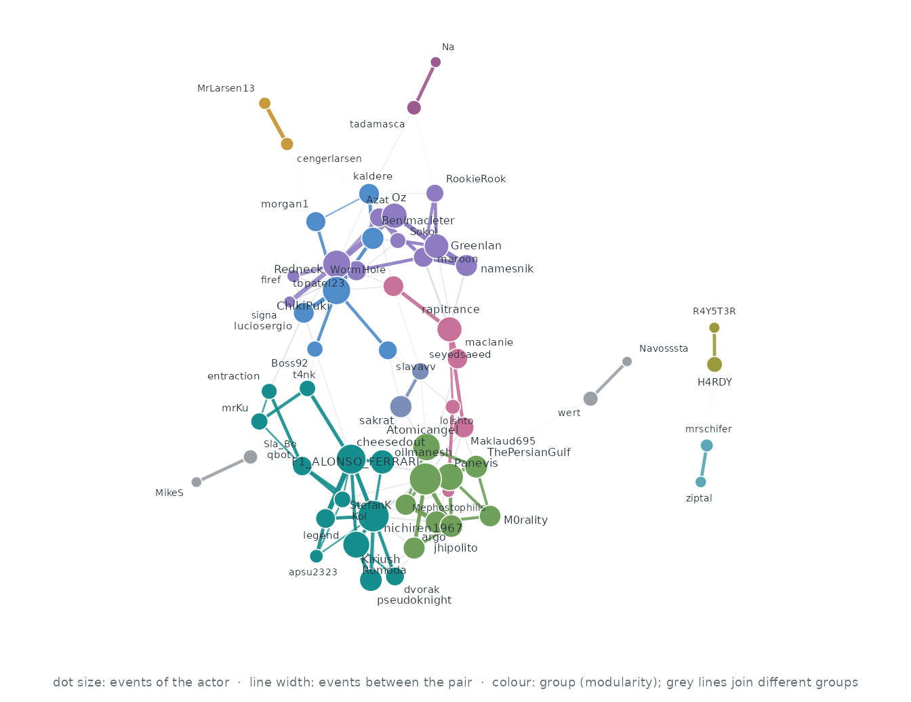
Who interacts with whom. The 60 actors of the busiest pairs, out of 4,922; events between two of them are 5.2% of all events. Each actor’s three strongest ties are drawn (118 of 458 pairs that ever interacted): wider, darker lines carry more events, larger dots are more active actors, and colours are groups found by modularity (Louvain).
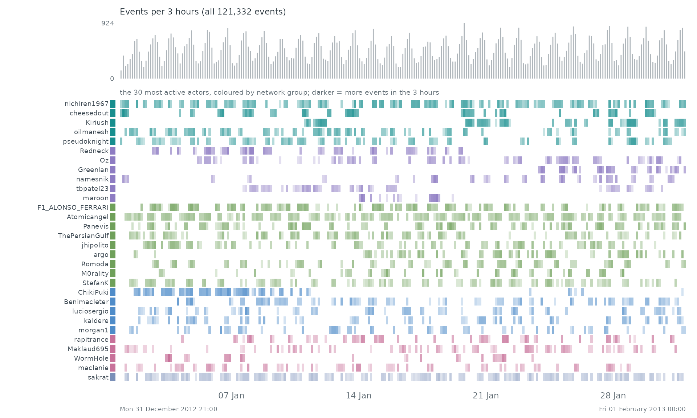
When. Each row is one of the 30 most active actors of the network, coloured by its group there; a cell is darker the more events (with anyone) the actor took part in during that stretch of time. The grey bars on top count all 121,332 events.
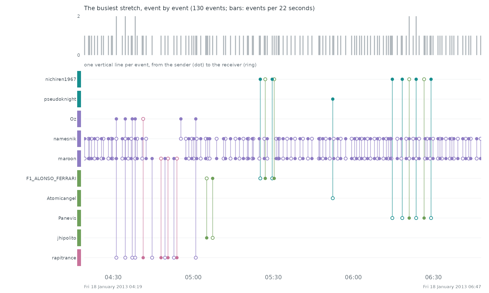
Event by event. The busiest stretch of the record, Fri 18 January 2013 04:19 to Fri 18 January 2013 06:47, event by event: each vertical line is one event between two of the actors above, from the sender (dot) to the receiver (ring).
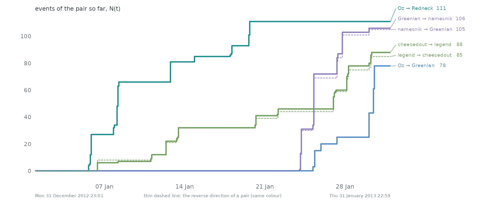
Pairs as counting processes. The counting process N(t) of the 6 busiest pairs: the number of events of the pair up to time t. Together they make 0.5% of all events. Steep stretches are bursts and flat ones silences. 4 of these pairs are the reverse of another, so replies run alongside the messages they answer.
Statistical profile.
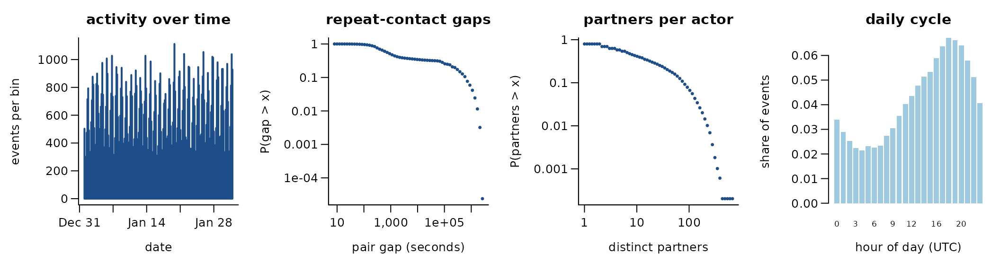
121,332 directed events among 4,922 actors over 31.0 days (79,538 distinct ordered pairs). 34.4% of events repeat an earlier ordered pair; if every event chose a pair at random the share would be 0.3%. 36.5% of events answer an earlier event in the opposite direction. The burstiness coefficient of the gaps between successive events of the same pair is 0.38 (0 for a Poisson process, positive when events cluster in bursts); the most active tenth of the actors take part in 63.0% of events (Gini 0.77). white -> black, rated standard games
A conditional logit on the first 4,000 events (one sampled control per event) gives:
| term | estimate | s.e. |
|---|---|---|
| log(1 + sender’s past events) | 0.83 | 0.04 |
| log(1 + receiver’s past events received) | 0.72 | 0.04 |
| log(1 + past events receiver -> sender) | 7.55 | 0.84 |
Get the data
download.file("https://database.lichess.org/", "lichess-database-index.html", mode = "wb")
download.file("https://database.lichess.org/standard/lichess_db_standard_rated_2013-01.pgn.zst", "lichess_db_standard_rated_2013-01.pgn.zst", mode = "wb")A reader that turns these files into a
(sender, receiver, time) table is
readers[["lichess-2013-01"]] in data-raw/catalogue/readers.R.
KONECT: chess games
Source: http://konect.cc/ · Licence: unknown (site unreachable 2026-10-17) · Status in amorem: no licence stated: not redistributed; obtain from the source.
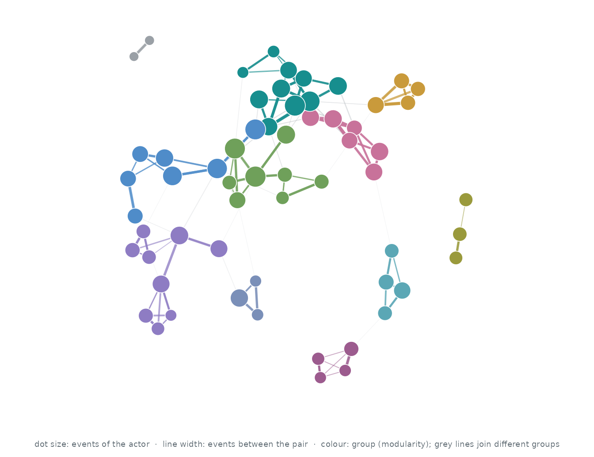
Who interacts with whom. The 60 actors of the busiest pairs, out of 7,301; events between two of them are 1.7% of all events. Each actor’s three strongest ties are drawn (109 of 350 pairs that ever interacted): wider, darker lines carry more events, larger dots are more active actors, and colours are groups found by modularity (Louvain).
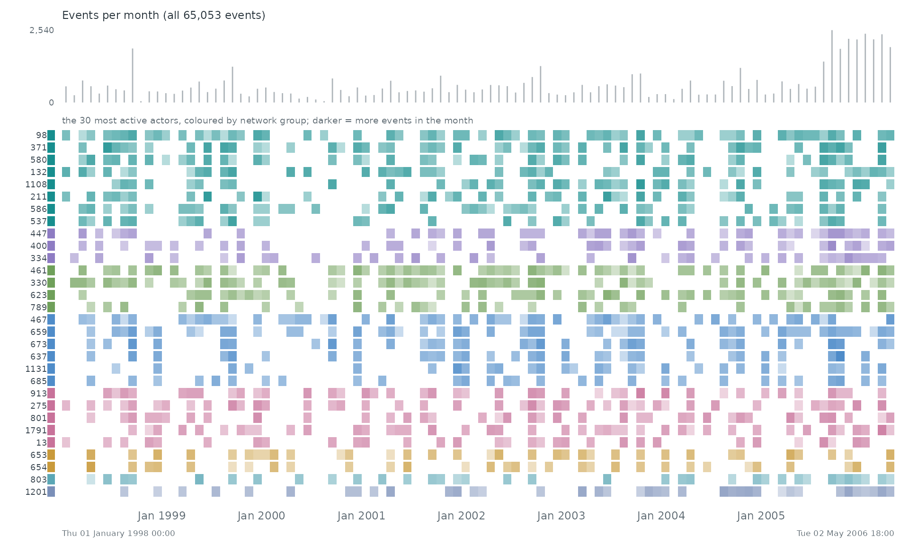
When. Each row is one of the 30 most active actors of the network, coloured by its group there; a cell is darker the more events (with anyone) the actor took part in during that stretch of time. The grey bars on top count all 65,053 events.
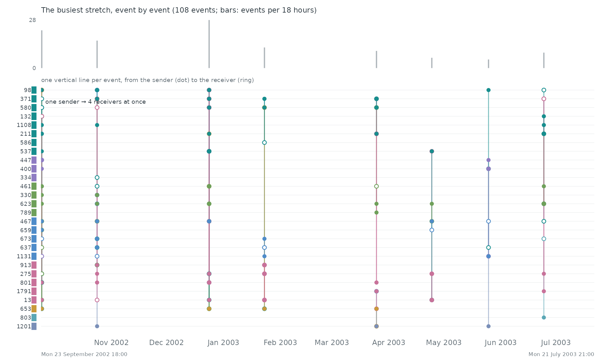
Event by event. The busiest stretch of the record, Mon 23 September 2002 18:00 to Mon 21 July 2003 21:00, event by event: each vertical line is one event between two of the actors above, from the sender (dot) to the receiver (ring).
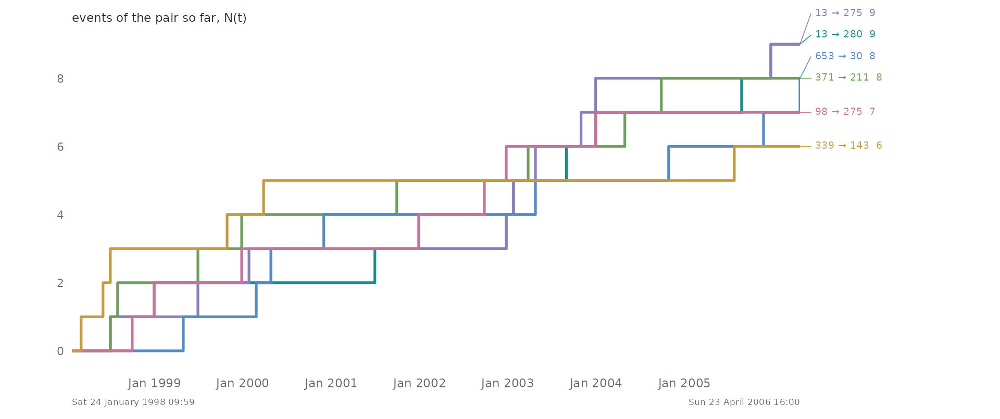
Pairs as counting processes. The counting process N(t) of the 6 busiest pairs: the number of events of the pair up to time t. Together they make 0.1% of all events. Steep stretches are bursts and flat ones silences.
Statistical profile.
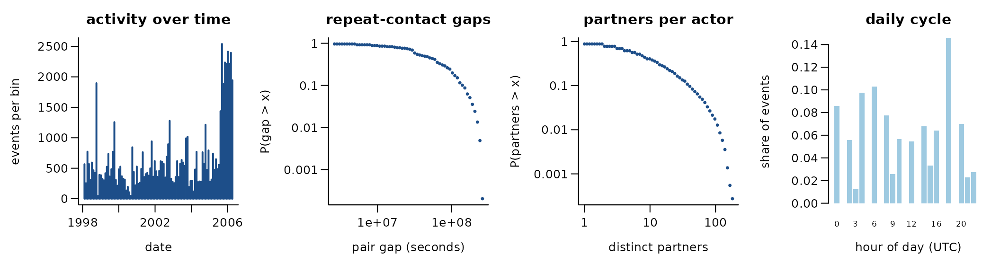
65,053 directed events among 7,301 actors over 3,011.3 days (60,046 distinct ordered pairs). 7.7% of events repeat an earlier ordered pair; if every event chose a pair at random the share would be 0.1%. 7.6% of events answer an earlier event in the opposite direction. The burstiness coefficient of the gaps between successive events of the same pair is -0.07 (0 for a Poisson process, positive when events cluster in bursts); the most active tenth of the actors take part in 49.5% of events (Gini 0.64). 99.8% of events share their time stamp with an earlier one. white -> black; result in the weight column
A conditional logit on the first 4,000 events (one sampled control per event) gives:
| term | estimate | s.e. |
|---|---|---|
| log(1 + sender’s past events) | -0.17 | 0.04 |
| log(1 + receiver’s past events received) | -0.08 | 0.04 |
| log(1 + past events receiver -> sender) | 5.19 | 1.04 |
Get the data
download.file("http://konect.cc/files/download.tsv.chess.tar.bz2", "download.tsv.chess.tar.bz2", mode = "wb")A reader that turns these files into a
(sender, receiver, time) table is
readers[["konect-chess"]] in data-raw/catalogue/readers.R.
International football results 1872-present
Source: https://github.com/martj42/international_results ·
Licence: CC0 1.0 · Status in amorem: bundled as
football_results.
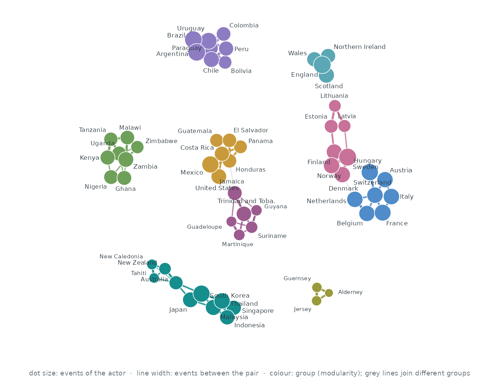
Who interacts with whom. The 60 actors of the busiest pairs, out of 337; events between two of them are 23.7% of all events. Each actor’s three strongest ties are drawn (108 of 820 pairs that ever interacted): wider, darker lines carry more events, larger dots are more active actors, and colours are groups found by modularity (Louvain).

When. Each row is one of the 30 most active actors of the network, coloured by its group there; a cell is darker the more events (with anyone) the actor took part in during that stretch of time. The grey bars on top count all 49,945 events.
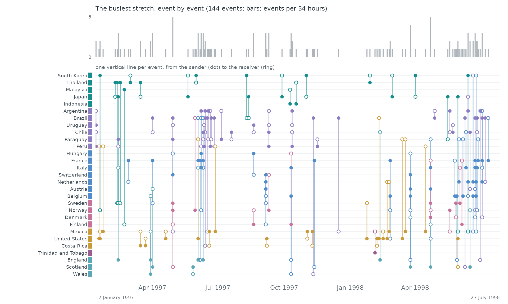
Event by event. The busiest stretch of the record, 12 January 1997 to 27 July 1998, event by event: each vertical line is one event between two of the actors above, from the sender (dot) to the receiver (ring).
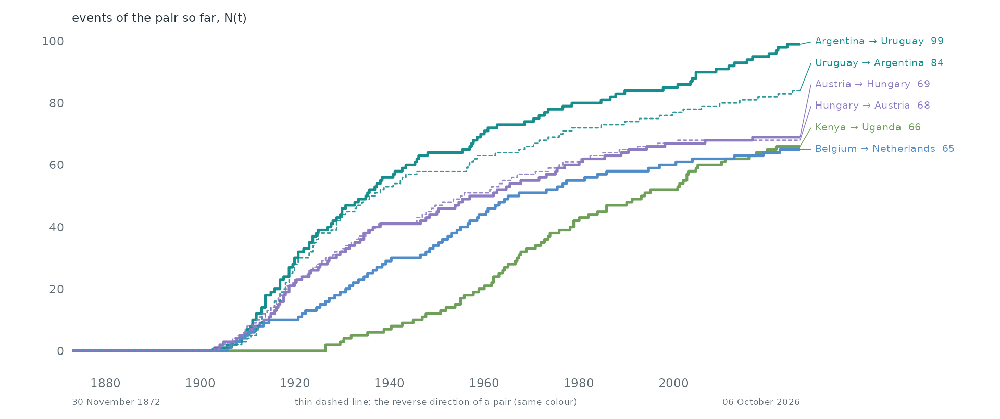
Pairs as counting processes. The counting process N(t) of the 6 busiest pairs: the number of events of the pair up to time t. Together they make 0.9% of all events. Steep stretches are bursts and flat ones silences. 4 of these pairs are the reverse of another, so replies run alongside the messages they answer.
Over time. 1869–1873 to 2026–2029 in windows of one 48 months (49,945 events in this span). Press play, or drag the bar to stop on a moment; the dark bar below the network marks the current window among all windows.
Statistical profile.
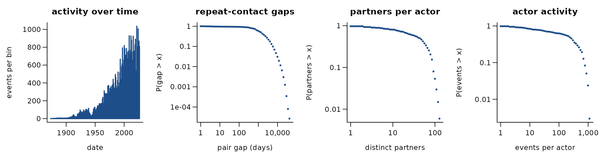
49,945 directed events among 337 actors over 56,192.0 days (12,368 distinct ordered pairs). 75.2% of events repeat an earlier ordered pair; if every event chose a pair at random the share would be 19.1%. 76.9% of events answer an earlier event in the opposite direction. The burstiness coefficient of the gaps between successive events of the same pair is 0.12 (0 for a Poisson process, positive when events cluster in bursts); the most active tenth of the actors take part in 30.2% of events (Gini 0.54). 66.9% of events share their time stamp with an earlier one. home -> away team, men’s internationals since 1872
A conditional logit on the first 4,000 events (one sampled control per event) gives:
| term | estimate | s.e. |
|---|---|---|
| log(1 + sender’s past events) | 0.46 | 0.04 |
| log(1 + receiver’s past events received) | 0.37 | 0.03 |
| log(1 + past events receiver -> sender) | 2.73 | 0.16 |
Get the data
download.file("https://raw.githubusercontent.com/martj42/international_results/master/COMMIT.txt", "COMMIT.txt", mode = "wb")
download.file("https://raw.githubusercontent.com/martj42/international_results/master/LICENSE", "LICENSE", mode = "wb")
download.file("https://raw.githubusercontent.com/martj42/international_results/master/README.md", "README.md", mode = "wb")
download.file("https://raw.githubusercontent.com/martj42/international_results/master/former_names.csv", "former_names.csv", mode = "wb")
download.file("https://raw.githubusercontent.com/martj42/international_results/master/goalscorers.csv", "goalscorers.csv", mode = "wb")
download.file("https://raw.githubusercontent.com/martj42/international_results/master/results.csv", "results.csv", mode = "wb")
download.file("https://raw.githubusercontent.com/martj42/international_results/master/shootouts.csv", "shootouts.csv", mode = "wb")A reader that turns these files into a
(sender, receiver, time) table is
readers[["international-football-results"]] in data-raw/catalogue/readers.R.
Retrosheet MLB game logs 1871-2024
Source: https://www.retrosheet.org/ · Licence: free use with required notice · Status in amorem: may be redistributed with attribution.
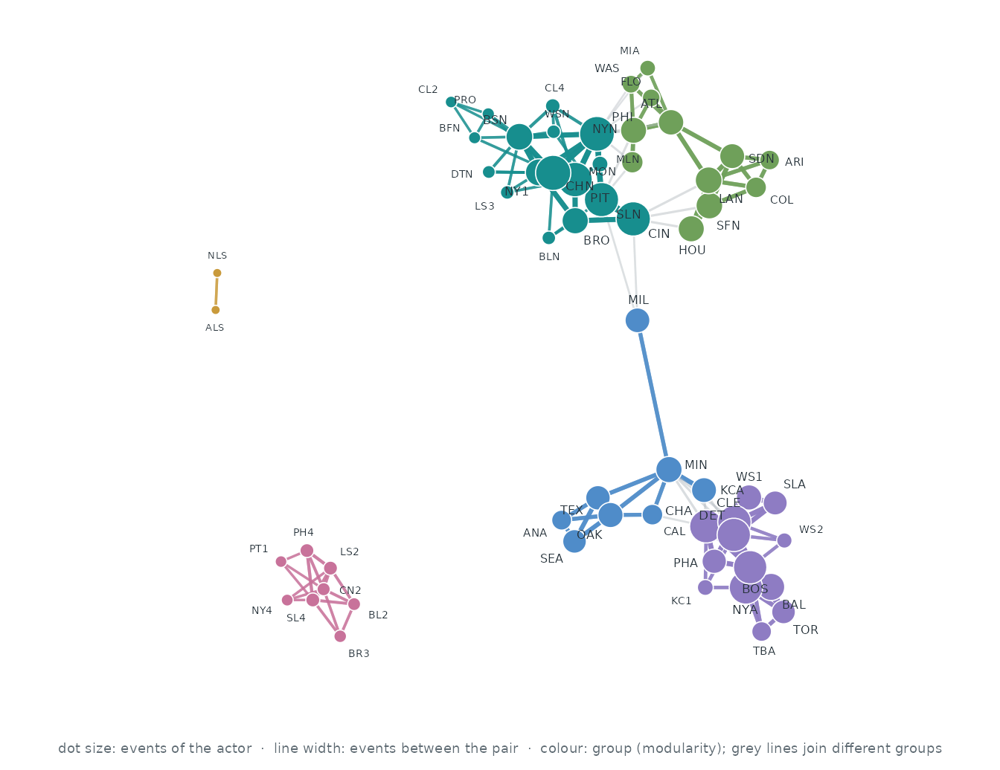
Who interacts with whom. The 60 actors of the busiest pairs, out of 153; events between two of them are 96.1% of all events. Each actor’s three strongest ties are drawn (148 of 682 pairs that ever interacted): wider, darker lines carry more events, larger dots are more active actors, and colours are groups found by modularity (Louvain).
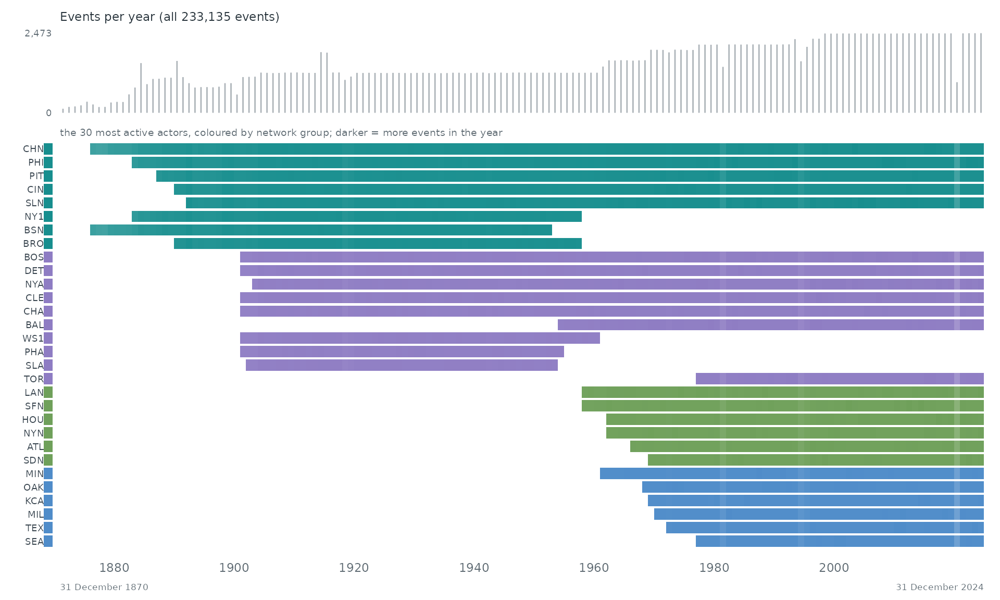
When. Each row is one of the 30 most active actors of the network, coloured by its group there; a cell is darker the more events (with anyone) the actor took part in during that stretch of time. The grey bars on top count all 233,135 events.
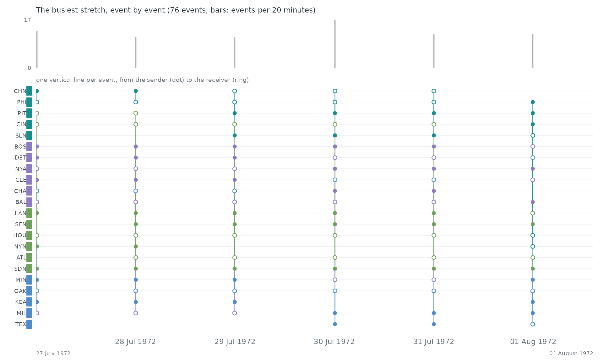
Event by event. The busiest stretch of the record, 27 July 1972 to 01 August 1972, event by event: each vertical line is one event between two of the actors above, from the sender (dot) to the receiver (ring).
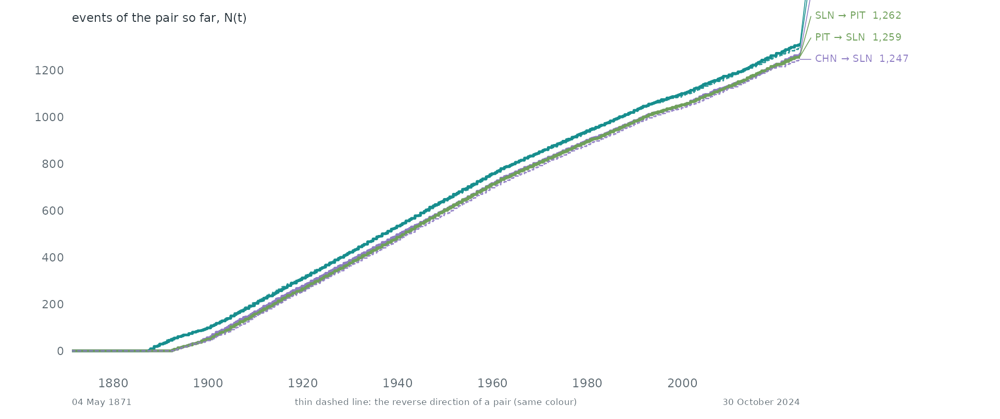
Pairs as counting processes. The counting process N(t) of the 6 busiest pairs: the number of events of the pair up to time t. Together they make 3.3% of all events. Steep stretches are bursts and flat ones silences. 6 of these pairs are the reverse of another, so replies run alongside the messages they answer.
Statistical profile.
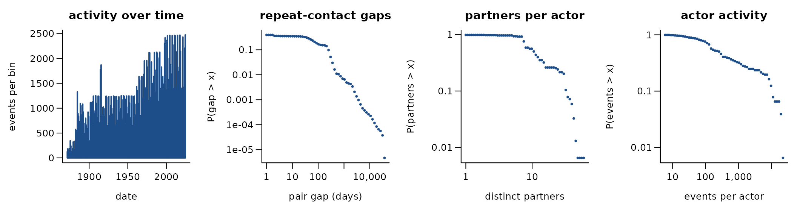
233,135 directed events among 153 actors over 56,062.0 days (2,326 distinct ordered pairs). 99.0% of events repeat an earlier ordered pair; if every event chose a pair at random the share would be 90.0%. 98.6% of events answer an earlier event in the opposite direction. The burstiness coefficient of the gaps between successive events of the same pair is 0.68 (0 for a Poisson process, positive when events cluster in bursts); the most active tenth of the actors take part in 57.9% of events (Gini 0.77). 88.4% of events share their time stamp with an earlier one. visiting -> home team, MLB games 1871-2024. The information used here was obtained free of charge from and is copyrighted by Retrosheet. Interested parties may contact Retrosheet at www.retrosheet.org.
A conditional logit on the first 4,000 events (one sampled control per event) gives:
| term | estimate | s.e. |
|---|---|---|
| log(1 + sender’s past events) | 0.23 | 0.03 |
| log(1 + receiver’s past events received) | 0.14 | 0.03 |
| log(1 + past events receiver -> sender) | 1.76 | 0.07 |
Get the data
download.file("https://www.retrosheet.org/gamelogs/gl1871_2024.zip", "gl1871_2024.zip", mode = "wb")
download.file("https://www.retrosheet.org/gamelogs/glfields.txt", "glfields.txt", mode = "wb")
download.file("https://www.retrosheet.org/notice.txt", "notice.txt", mode = "wb")A reader that turns these files into a
(sender, receiver, time) table is
readers[["retrosheet-gamelogs"]] in data-raw/catalogue/readers.R.